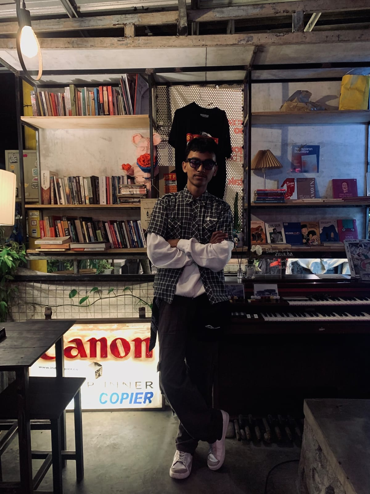
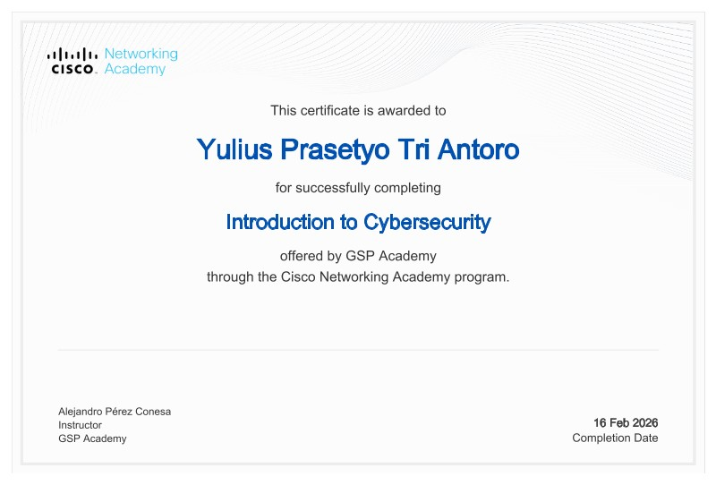
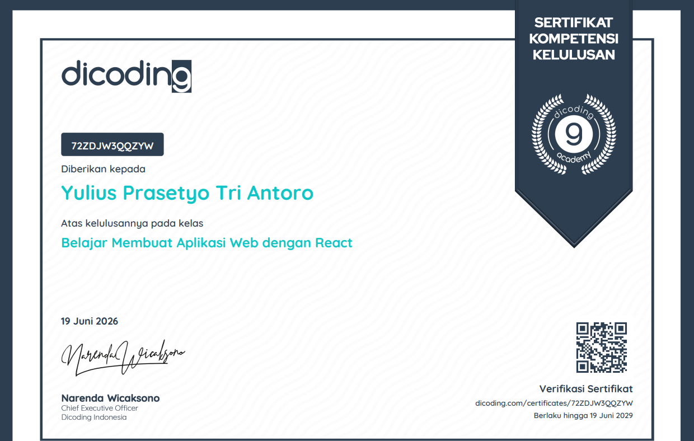
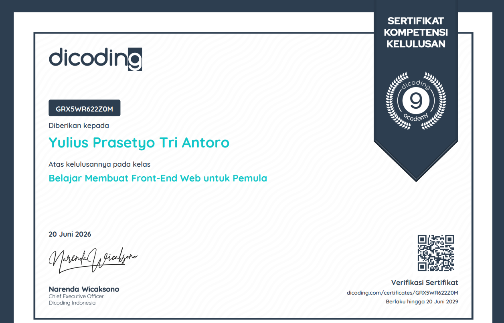

Hi, I'm Tyo
|
Hallo saya Yulius Prasetyo Tri Antoro atau sering dipanggil Tyo. Saya adalah seoarang mahasiswa jurusan Teknik Informatika di kampus Universitas Sains dan Teknologi Komputer (STEKOM). Dan sekarang memiliki minat besar dibidang Cyber Security yang sedang diperdalam.

DISCOVER
About Me
Who Am I
Saya adalah seorang mahasiswa yang memiliki keinginan belajar yang tinggi dan suka mengeksplor hal-hal yang kurang saya ketahui tentang web development dan cyber security.
My Approach
Saya memiliki pendekataan di bidang web development dan cyber security karena melihat jenjang karir yang lumayan bagus didalam dua bidang tersebut.
Personal Details
NAME
Yulius Prasetyo Tri Antoro
PLACE OF BIRTH
Magelang, Indonesia
PHONE
+62 821-34XX-XXXX
GITHUB
yuliusprasetyo
EMAIL
yuliusprasetyo30@gmail.com
EDUCATION
Universitas Sains Dan Teknologi Komputer
I'm S3ngkun1 Hello
Web Developer Cyber Security
I'm S3ngkun1 Hello
Web Developer Cyber Security
I'm S3ngkun1 Hello
Web Developer Cyber Security
I'm S3ngkun1 Hello
Web Developer Cyber Security
I'm S3ngkun1 Hello
Web Developer Cyber Security
I'm S3ngkun1 Hello
Web Developer Cyber Security
I'm S3ngkun1 Hello
Web Developer Cyber Security
MY JOURNEY
Education
2019 - 2022
SMP
SMPK Santa Maria Sawangan
Mencari jati diri dan belajar mengikuti organisasi seperti osis, dan mengembangkan diri
2022 - 2025
SMK
SMK Pangudi Luhur Muntilan
Disini saya mengambil jurusan teknik mesin dan saya belajar logika pemrograman di SMK ini
2025 - Present
S1 Teknik Informatika
Universitas Sains dan Teknologi Komputer
Mempelajari berbagai bidang teknologi informasi, pemrograman, database, jaringan komputer, dan pengembangan aplikasi.
MY ACHIEVEMENTS
Achievements

Introduction to Cybersecurity
Cisco Networking Academy
Sertifikat pengenalan dasar cybersecurity, keamanan digital, dan konsep keamanan jaringan.

Membuat Aplikasi Web Dengan React
Dicoding
Sertifikat pembelajaran mengenai pembuatan aplikasi menggunakan React.js.

Full-Stack Web Developer
Dicoding
Sertifikat pembelajaran pengembangan web menggunakan teknologi modern.